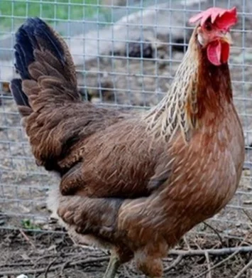
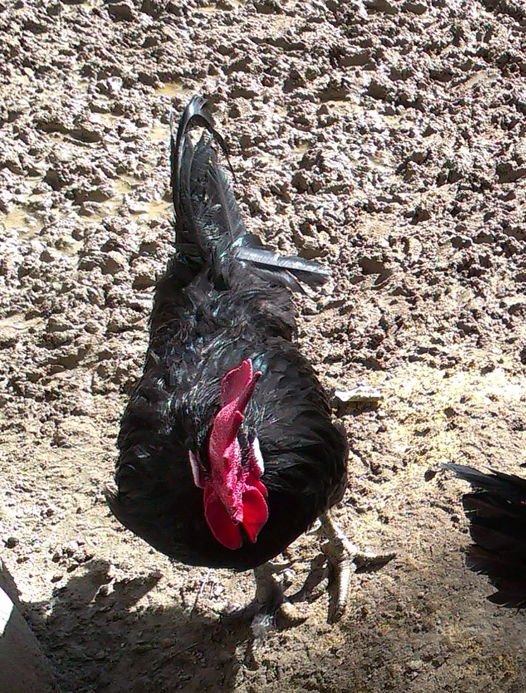

Utrerana: la andaluza negra y perdiz

La Utrerana es la gallina autóctona de Utrera (Sevilla), creada a principios del siglo XX por el avicultor Joaquín del Castillo en su gallinero de la Finca Santa Matilde, en Utrera. Del Castillo seleccionó durante años las gallinas locales andaluzas buscando una ponedora de huevo blanco grande y constante, y fijó una raza elegante y productiva que se extendió por toda Andalucía. Está catalogada como raza autóctona en peligro y es una de las razas españolas con más historia documentada, porque se conoce el nombre de su creador y la finca donde nació.
Origen e historia
La Utrerana es la gallina autóctona de Utrera (Sevilla), creada a principios del siglo XX por el avicultor Joaquín del Castillo en su gallinero de la Finca Santa Matilde, en Utrera. Del Castillo seleccionó durante años las gallinas locales andaluzas buscando una ponedora de huevo blanco grande y constante, y fijó una raza elegante y productiva que se extendió por toda Andalucía. Con la llegada de las híbridas industriales, la raza casi desapareció; su recuperación la lleva la Asociación Nacional de Criadores de Gallinas Utreranas (ANCGU), que mantiene el libro genealógico y organiza el concurso morfológico de la raza. Está catalogada como raza autóctona en peligro y es una de las razas españolas con más historia documentada, porque se conoce el nombre de su creador y la finca donde nació.
Características físicas
La gallina: ave de tamaño medio, de unos 2 a 2,5 kg, de porte elegante y estilizado, con el cuerpo alargado y la cola llevada en ángulo medio. Su cresta es sencilla y grande, con cinco o seis puntas, erguida en la gallina joven y algo caída en la adulta. Las orejillas son blancas, un detalle que la distingue, y las patas son de color pizarra o amarillas según la variedad, limpias y finas.
El gallo: de 3 a 3,5 kg, de porte muy erguido y airoso, con una cresta sencilla grande y espectacular, hoces largas y brillantes, y una cola amplia. Es un gallo de silueta inconfundible: alto, estilizado y con la cresta como corona.
Variedades de plumaje
El estándar reconoce cuatro variedades: negra (negro intenso con reflejos verdes, la más conocida), perdiz (pardo con dibujo de perdiz, la de la gallina de la foto principal), franciscana (blanca con el cuello y la cola listados) y blanca. Todas comparten la misma estructura elegante y la cresta grande.
Puesta
Es una de las mejores ponedoras entre las razas autóctonas españolas: en torno a 180–200 huevos al año, de color blanco y buen tamaño, que era justo lo que buscaba Joaquín del Castillo. Pone con regularidad y con buena persistencia, y su huevo blanco es su seña comercial frente a los huevos morenos de otras razas españolas.
Carácter
Activa, vivaz y algo nerviosa: es una gallina campera que se mueve mucho, escarba sin parar y se asusta con facilidad, pero que con trato diario se acostumbra al cuidador. El gallo es vigilante y cantarín, y defiende a sus gallinas con decisión. No es una raza de regazo: es una raza de campo, hecha para moverse.
Cuidados, alimentación y alojamiento
Raza mediterránea, hecha para el calor de la campiña sevillana: soporta muy bien el calor, pero necesita sombra, agua fresca y un gallinero ventilado en verano, y protección frente al frío húmedo en invierno. Necesita mucho espacio para campear (5 m² por ave) y un cercado alto, porque vuela bien. El gallinero debe ser seco y con perchas altas, y los nidales, oscuros y tranquilos. Come pienso de puesta, grano y forraje; en verano, con calor fuerte, conviene darle la ración principal a primera y última hora del día. Su cresta grande es sensible a las heladas: en zonas frías, un poco de vaselina en la cresta en invierno evita las quemaduras por frío.
Para qué sirve
Ponedora de huevo blanco: su valor principal es la puesta, abundante y de huevo blanco grande, un producto diferenciado en el mercado de huevo campero. También es ave de carne ligera y de exposición: sus cuatro variedades y su porte elegante la hacen muy apreciada en concursos morfológicos, y su historia documentada es un argumento de venta para granjas con producto local.
Curiosidades
Se conoce el nombre de su creador, Joaquín del Castillo, y la finca donde nació, Santa Matilde de Utrera, algo poco habitual en las razas tradicionales; su concurso morfológico anual reúne a los mejores ejemplares de las cuatro variedades; y su cresta es tan grande que en los gallos viejos llega a caer hacia un lado como una boina.
Fotos de la raza

Foto de grupo pendiente: hay que pedirla a la Asociación Nacional de Criadores de Gallinas Utreranas (ANCGU), junto con un gallo negro de perfil.
Fotos y licencias
Las fotos de esta ficha son fotografías reales con licencia libre de uso comercial. La licencia CC BY-SA 3.0 exige atribuir al autor y compartir las adaptaciones bajo la misma licencia; la foto de la gallina es CC0 (dominio público dedicado, sin exigencia de atribución, aunque se cita al autor igualmente). Las fotos se publican en WebP a partir de los originales, con su autor y su licencia.
- Gallina (foto principal): France01100 — CC0 (21-07-2025).
- Gallo: El Pantera — CC BY-SA 3.0 (16-02-2014).

.jpg){kind=link}
Fuentes
Datos raciales contrastados con el catálogo oficial de razas del Ministerio de Agricultura, Pesca y Alimentación: Utrerana — datos morfológicos (MAPA). La recuperación de la raza la lleva la Asociación Nacional de Criadores de Gallinas Utreranas (ANCGU), que mantiene el libro genealógico y organiza el concurso morfológico de la raza.
Prepara tu lote y tu gallinero
Antes de comprar aves, calcula el espacio que necesitas, lo que costará alimentarlas y cuándo tendrás los primeros huevos.
Comprueba la normativa local: algunas zonas exigen registrar las aves o avisar al ayuntamiento. Revisa las normas de tu municipio antes de criar.